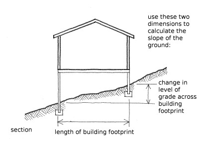

Pendiente del sueelo [HD]
La pendiente del suelo relevante cuando el edificio está ubicado en un sitio pendiente, en dónde la altura de la planta baja varía por más de un metro. La pendiente del edificio está medida a lo largo de la longitud de la superficie del edificio, en la dirección dónde se observa la mayor diferencia de nivel. La pendiente es medida en un ángulo desde la horizontal ( expresado en grados), en donde el sitio plano tendría cero (0) grados.
Para sitios plantos, en donde la variación de la altura de la planta baja es menor que 1m, el valor por defecto es cero (0) grados.
Unidades: grados
HD:a
en dónde a denota la pendiente (en grados)
Example: HD:10 (the slope is 10 degrees)

La pendiente de la rasante es calculada desde longitud de la superficie del edificio (en la dirección en la cual se encuentren mayores diferencias) y como el cambio en el nivel a lo largo de esta longitud.